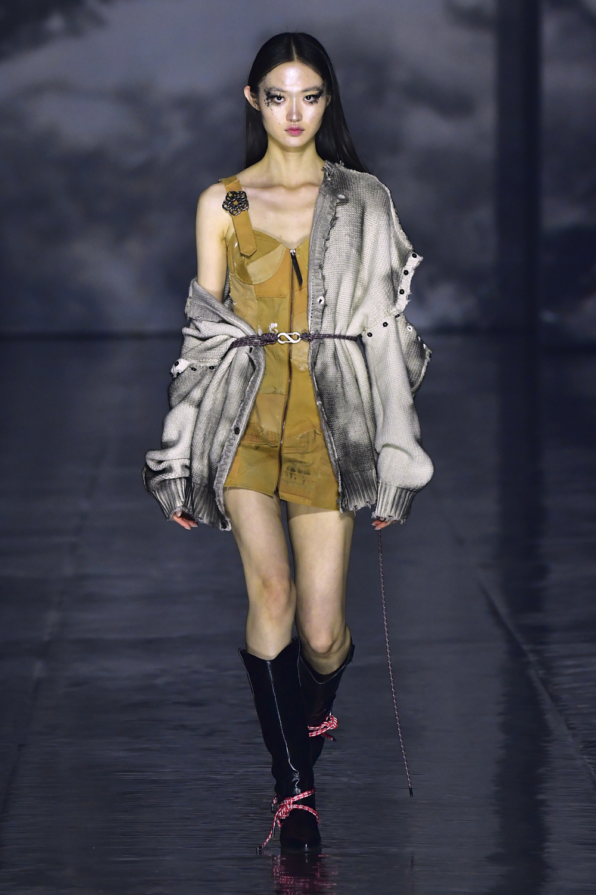
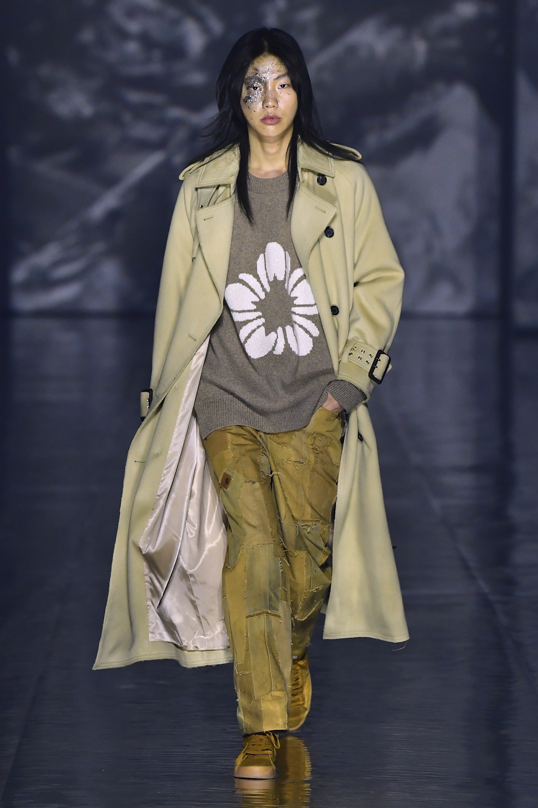
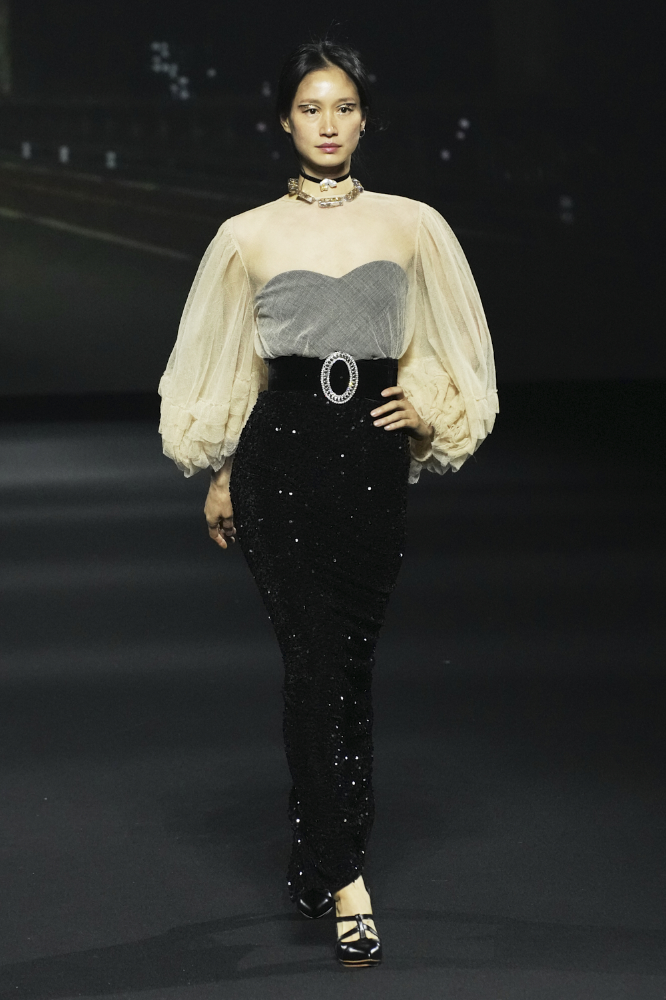
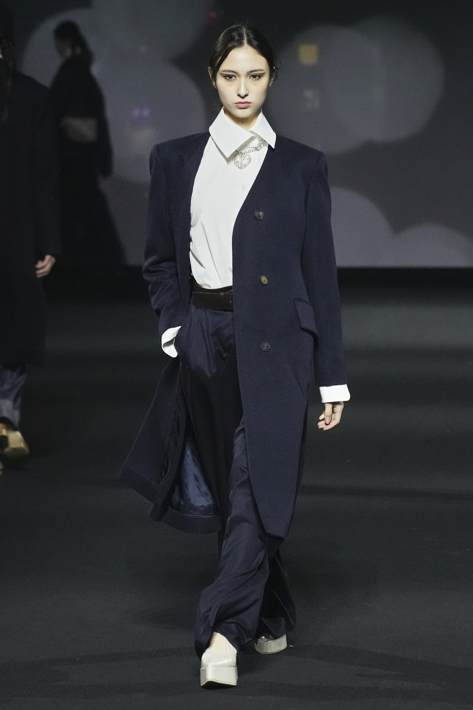
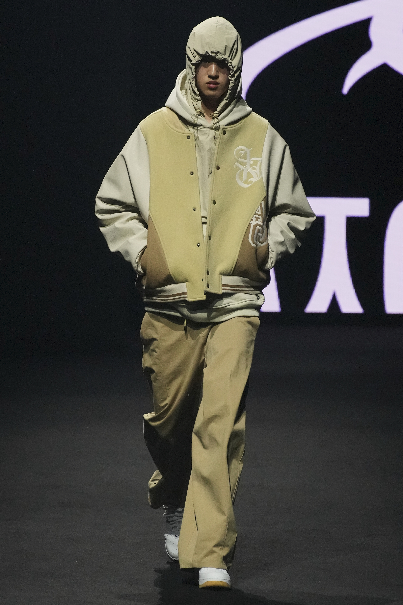
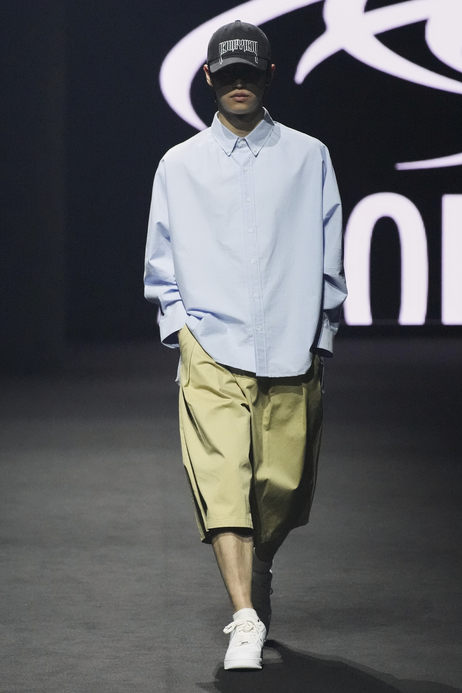
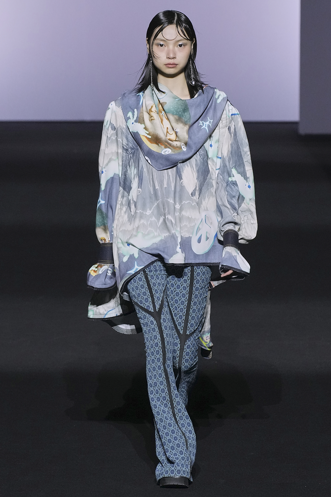
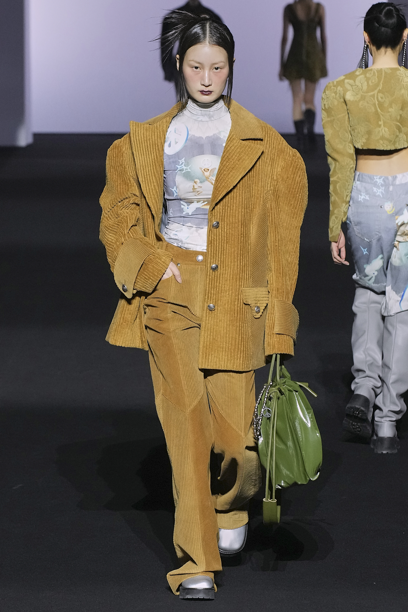

intro
서울디자인재단은
DDP를 통해
디자인을 펼칩니다.
얼킨은 고유의 감성과 미학을 토대로
가장 날카로운 지속가능성을 선보이는 브랜드입니다.


여성스러운 선을 드러낼 수 있는
실루엣, 섬세함, 강인함을 모던한 라인과
세심한 테일러링


아조바이아조 (AJOBYAJO)는 동시대를 살아가는 아웃사이더의 감성으로
아시아의 서브 컬처를 스트리트 웨어로 표현하는 브랜드입니다.


비건타이거는 모피 동물의 고통을 종식시키고
‘CRUELTY FREE’ 라는 슬로건을 지닌,
잔혹함이 없는 국내 최초의 VEGAN FASHION BRAND 입니다.

